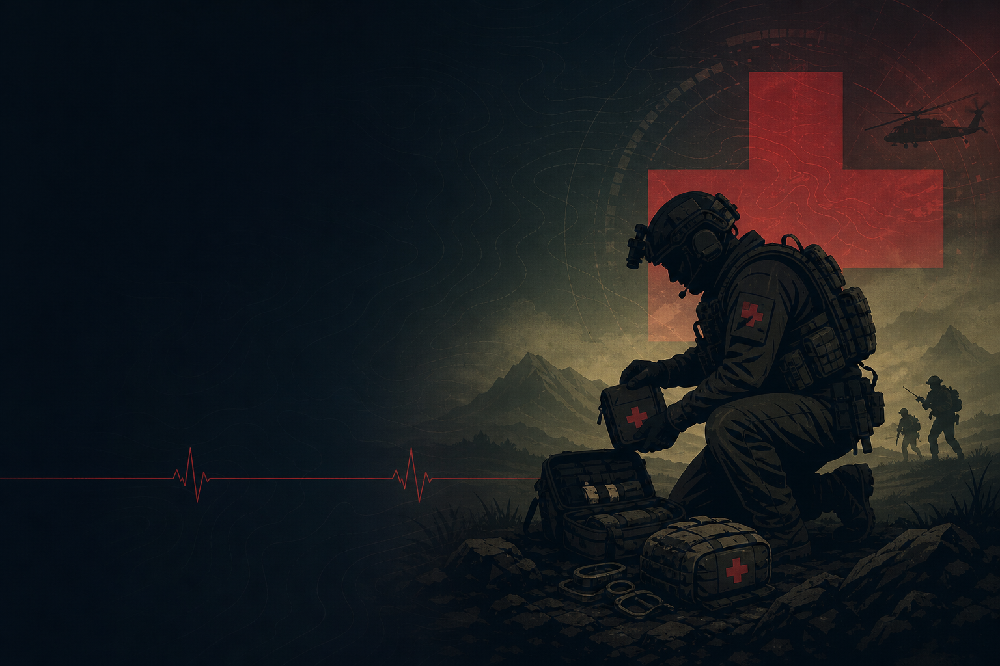
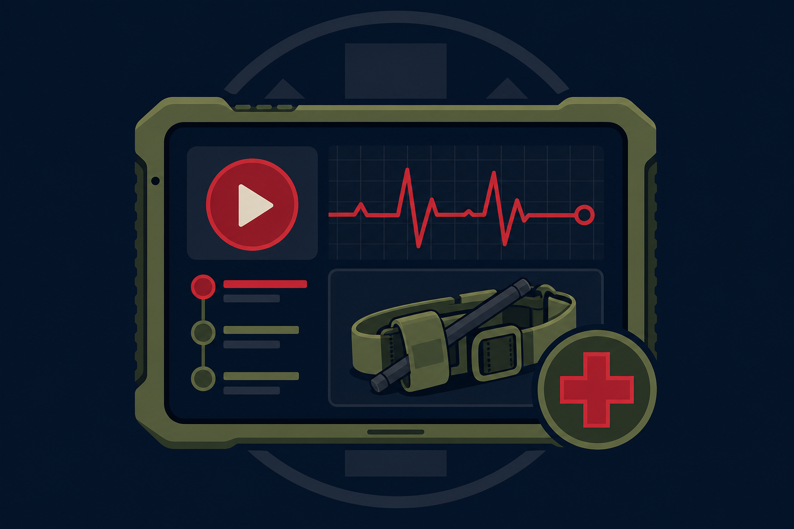
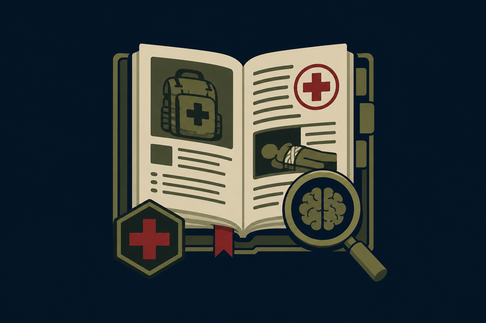
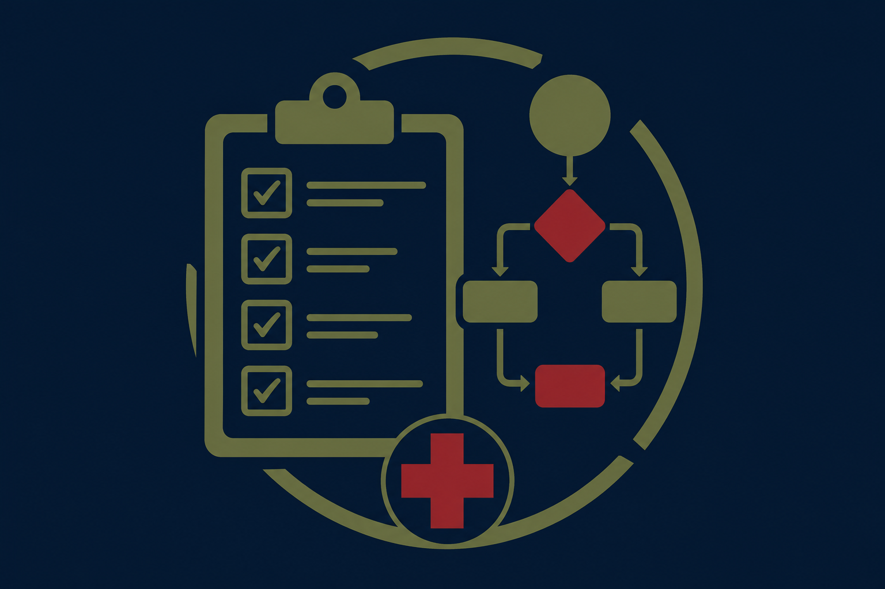

Tactical Medicine,
Made Clear
Interactive lessons, field-tested articles, and ready-to-use protocols — built for medics, first responders, and operators who need it right the first time.

Interactive lessons, field-tested articles, and ready-to-use protocols — built for medics, first responders, and operators who need it right the first time.
This hub grows over time. Each section is a different tool for sharpening tactical medical skills.

Interactive, browser-based training that runs anywhere — no install, no login.
Browse lessons →
Deep-dives, case reviews, and the reasoning behind the protocols you carry.
Read articles →
Clear, scannable algorithms and checklists for the moments that count.
Open protocols →Click a lesson to launch it in your browser.
Field-tested write-ups and case reviews.
Quick-reference algorithms and checklists for the field.